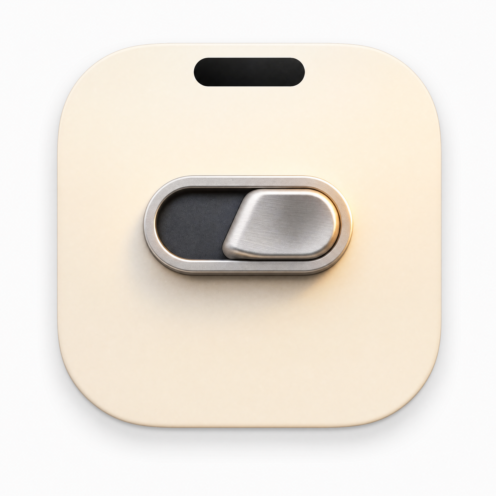
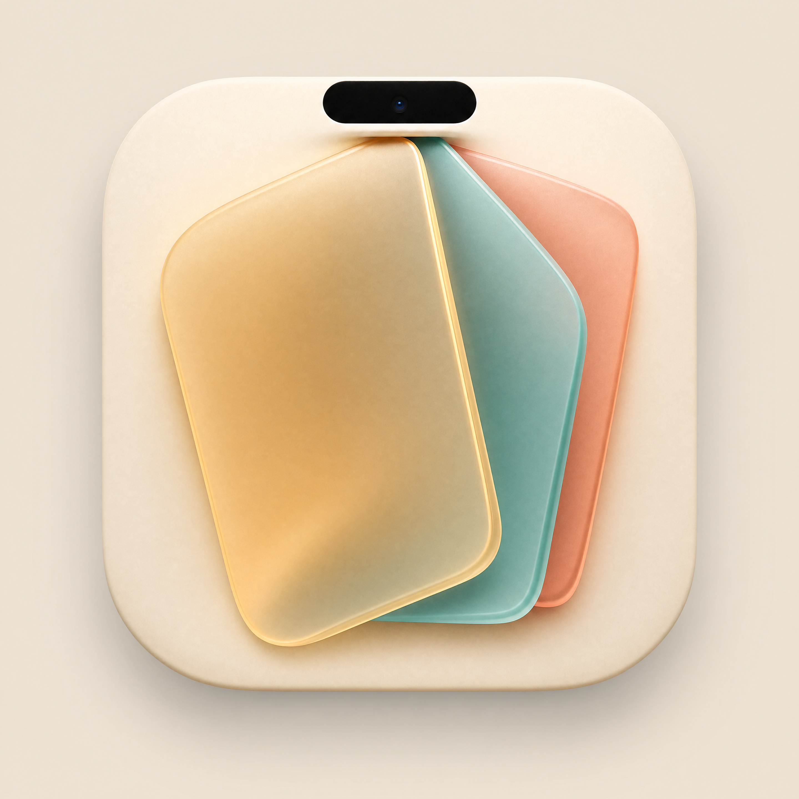
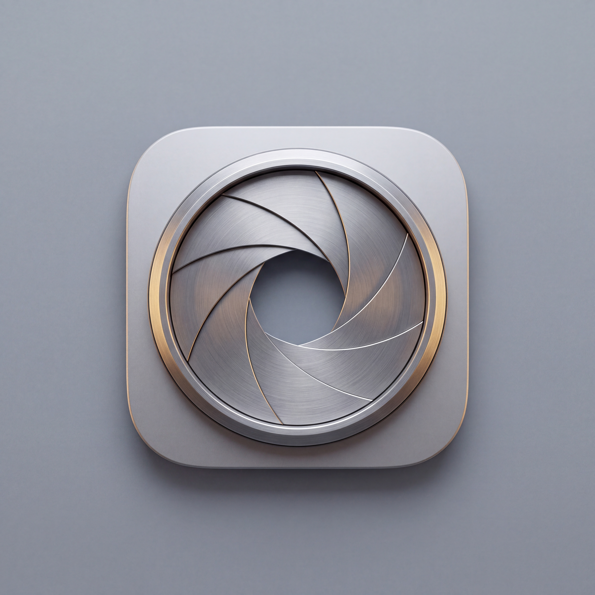
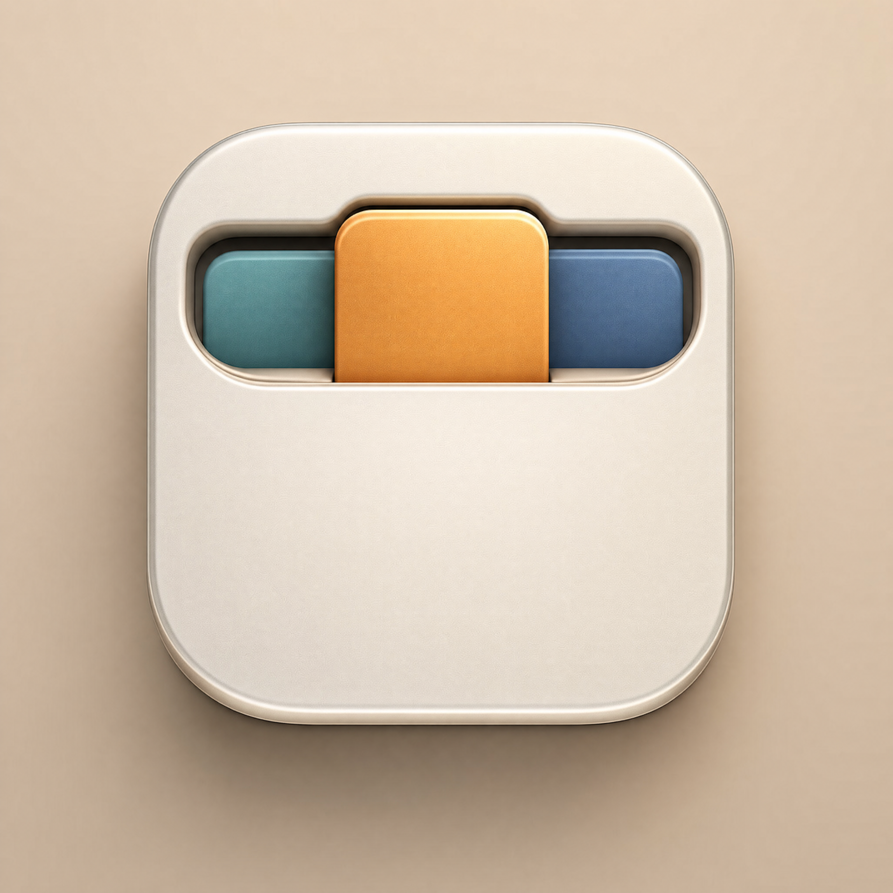
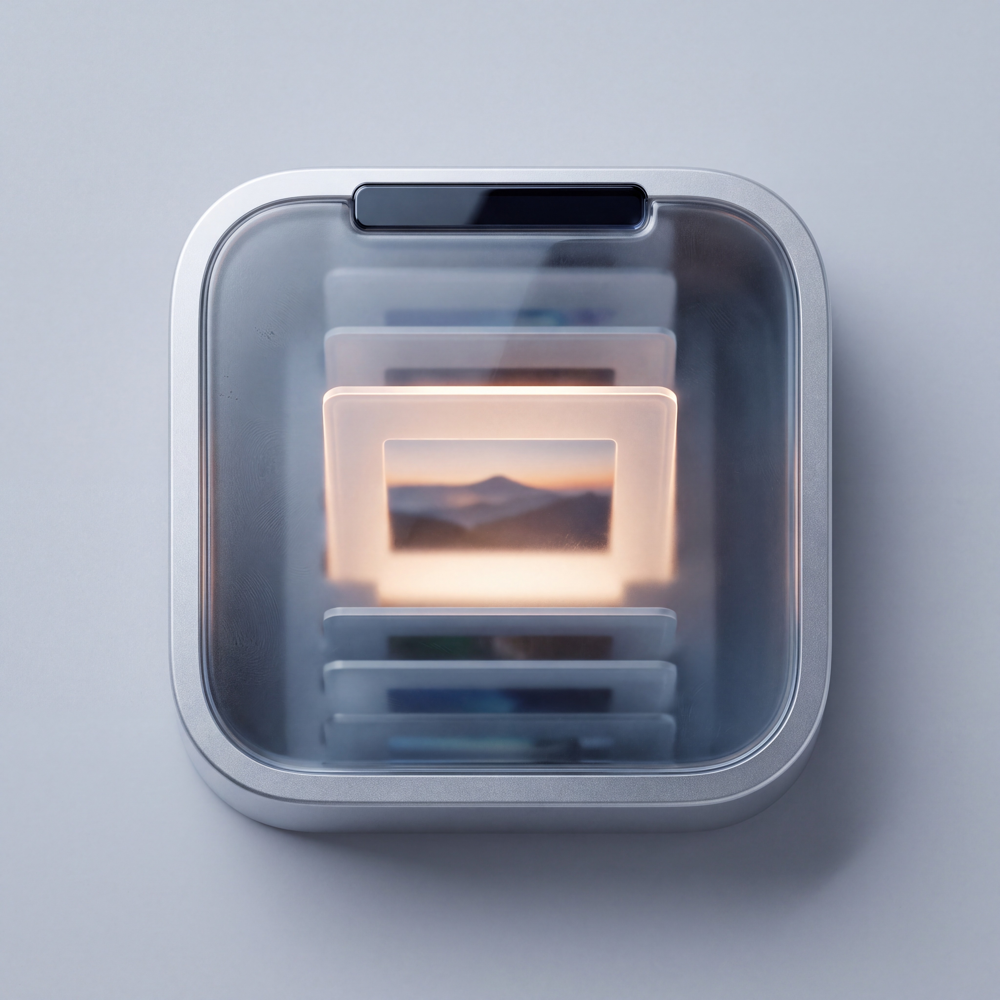
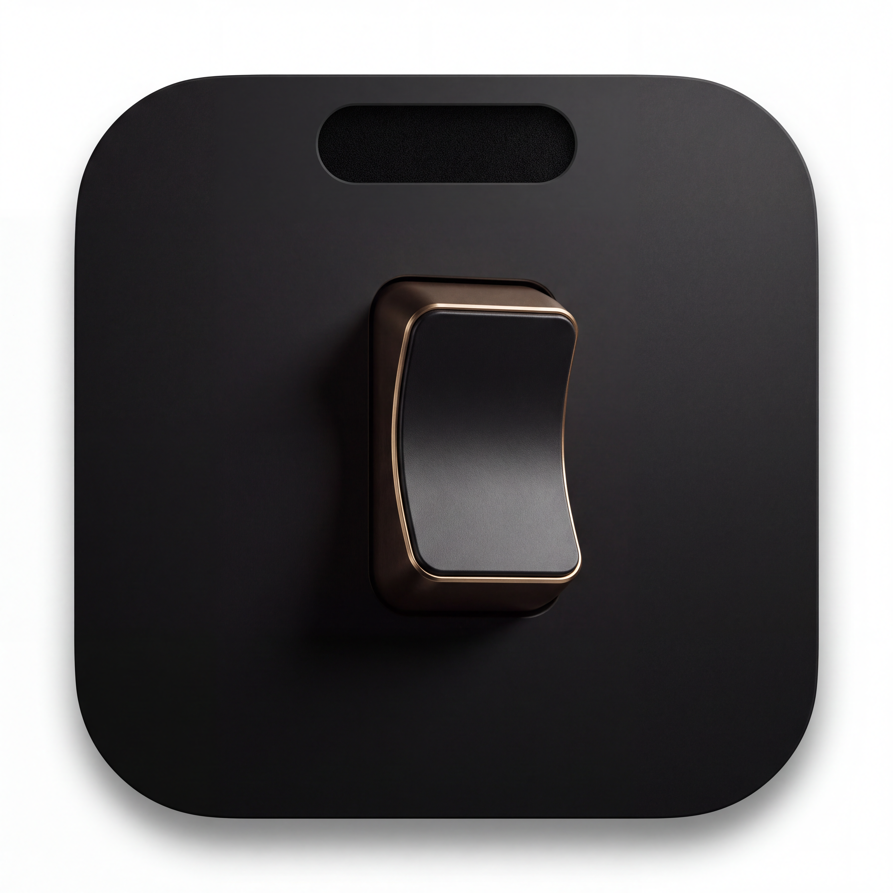
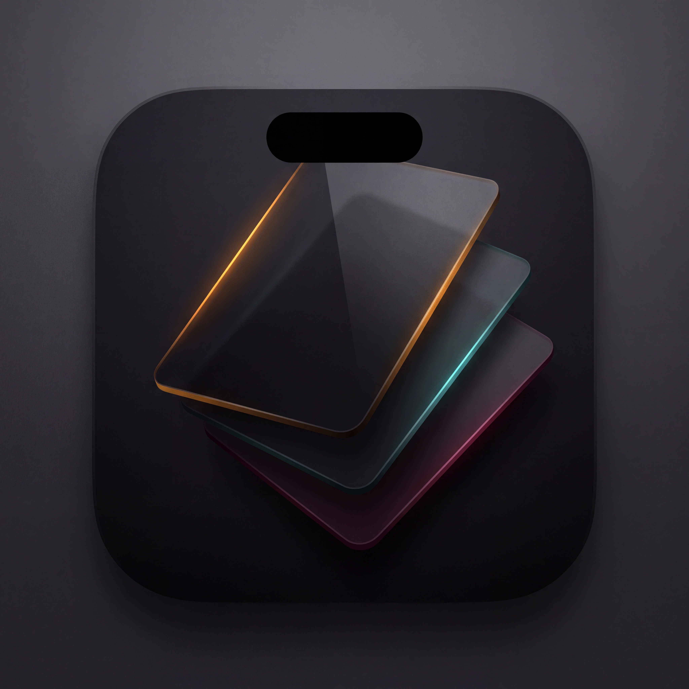
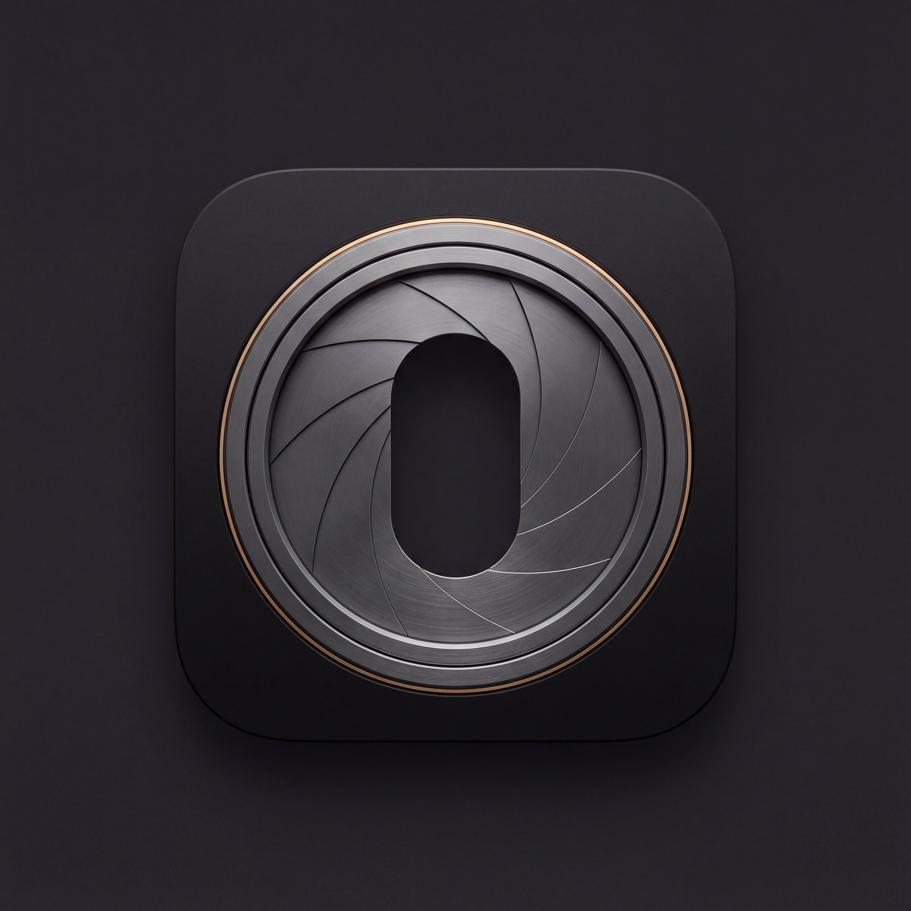
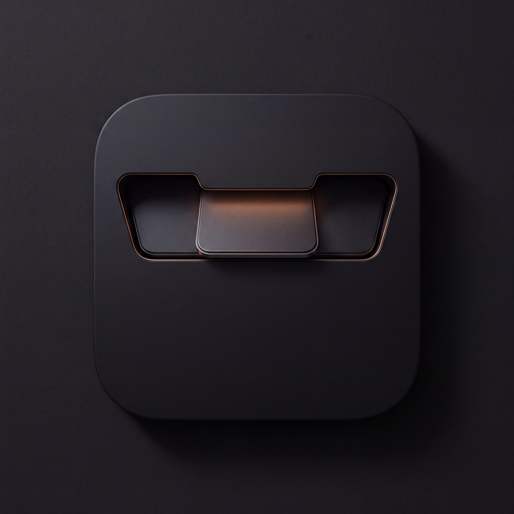

9 icônes générées via le CLI higgsfield (GPT Image 2 et Nano Banana Pro), 1024×… jusqu'à 4K, aucune n'est dessinée à la main. Chaque direction traduit l'idée produit : le notch comme interrupteur, plusieurs couches dont une seule est visible à la fois.

Un rocker switch en forme de pilule, écho direct du notch au-dessus.
GPT Image 2
Trois panneaux de verre dépoli empilés sous le notch, un seul net.
GPT Image 2
Diaphragme mécanique dont l'ouverture forme la pilule du notch.
Nano Banana Pro
Rolodex de jetons dans une rainure en forme de notch, un seul éclairé.
GPT Image 2
Pile de diapositives qui défile, une seule éclairée dans la fente du notch.
Nano Banana Pro
Onyx mat et liseré laiton, presque invisible jusqu'au reflet.
Nano Banana Pro · 4K
Verre fumé quasi noir, chaque couche ne révèle qu'un fin liseré de couleur.
Nano Banana Pro · 4K
Diaphragme gunmetal, anneau laiton en filet. La plus aboutie du lot.
Nano Banana Pro · 4K
Rainure noire, jeton central chauffé d'une lueur cuivrée.
Nano Banana Pro · 4K